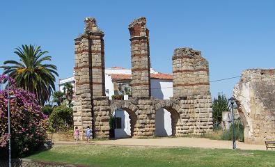
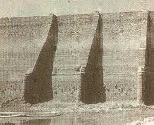

|
Embalses y Acueductos
El suministro del agua era primordial en la proyección de
las nuevas ciudades, tenían que cubrir las necesidades de la población y
abastecer a la industria.
|
|
ACUEDUCTO DE LOS MILAGROS Este acueducto conducía el
agua a la ciudad desde el embalse de Proserpina.
El acueducto tenia una longitud de 840m de arcadas y una altura máxima de 25m. Los materiales empleados en la construcción fueron ladrillos y bloques de granito. Se construyó entre finales del siglo I a.e.c. y principios del siglo. Pero análisis de expertos revelan que el acueducto fue levantado a partir del siglo IV con influencia bizantina.
|
|
ACUEDUCTO DE SAN
LÁZARO Al
norte y noroeste de la ciudad se encuentran varios arroyos y manantiales
de los que se alimenta este acueducto,- Valhondo, Las Tomas y Casa
Herrera-. |
 |
|
ACUEDUCTO y EMBALSE DE CORNALVO Se encuentra emplazado a 15km
de la ciudad de Mérida al NE en el parque natural de Cornalvo.
|
|
EMBALSE DE PROSERPINA En 1991 con las obras de limpieza se observó una estructura desconocida. Según los arqueólogos seria la presa antigua de unos 6 metros de altura, construida en la época de la fundación y que posteriormente esta se amplió hacia el siglo II. También se han encontrado varios conductos de salida realizados en plomo. Otros arqueólogos sostienen que la presa no es de origen romano.
 Presa Proserpina 1991 |
|
|
|
Ver Embalses romanos
|
||
|
Vida en Emérita
|
||
|
Espectáculos y ocio |
Periferia e infraestructuras |
|